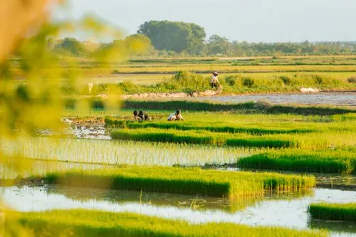
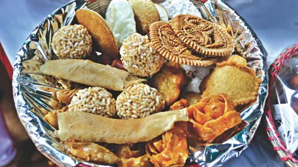
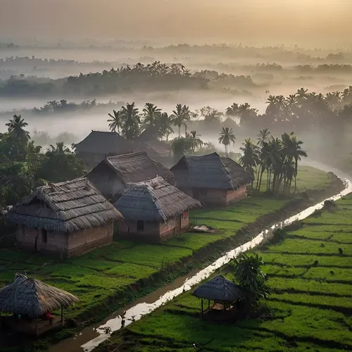
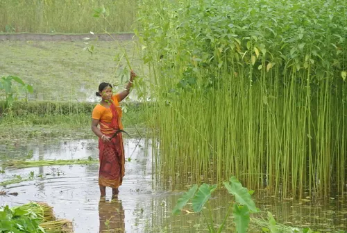
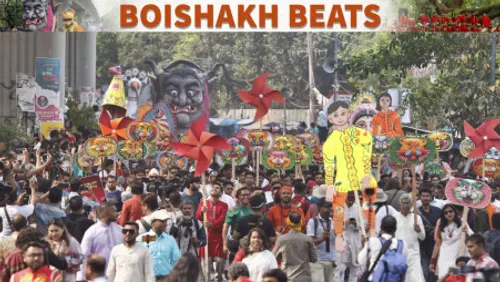

Living heritage
Culture & Heritage
Language, food, music, clothing, and festive celebration together create the living culture of Bangladesh.
Traditions
What makes the culture vibrant
Food
From biryani and pitha to hilsa and local sweets, food reflects seasonal rhythm, family life, and regional identity.
Baul folk music
Baul traditions carry spiritual and lyrical expressions rooted in everyday life, love, and devotion.
Clothing
Traditional garments such as sarees, lungis, and regional garments remain part of daily and festive culture.
Nakshi kantha
Handcrafted quilts and embroidered textiles often carry stories, memory, and artistic skill from generation to generation.
Pohela Boishakh
The Bengali New Year is celebrated with music, food, greeting, and community gatherings across the country.
Festivals
Festivals honour harvests, heritage, family, and local customs, creating shared moments of joy and meaning.
Photos
Moments from Bangladeshi culture





Bangla is the national language, and it remains a central source of identity, literature, and everyday pride in Bangladesh.